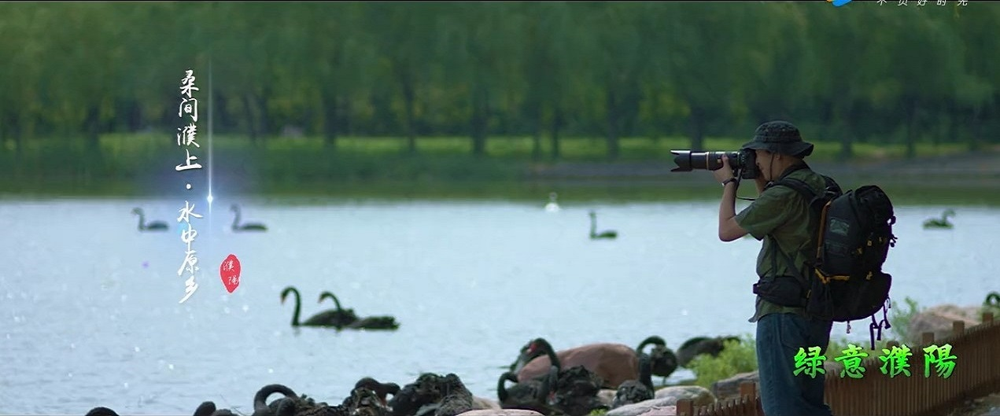
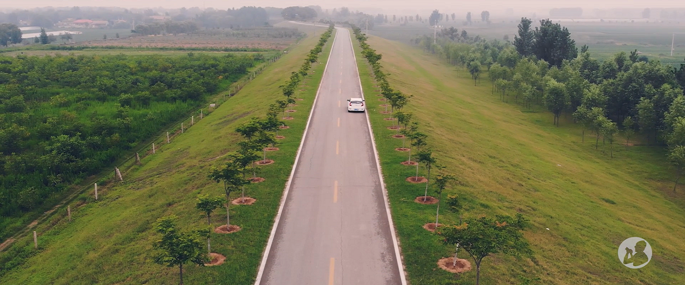
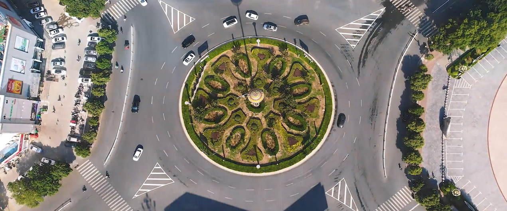
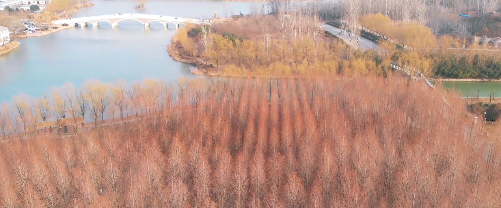
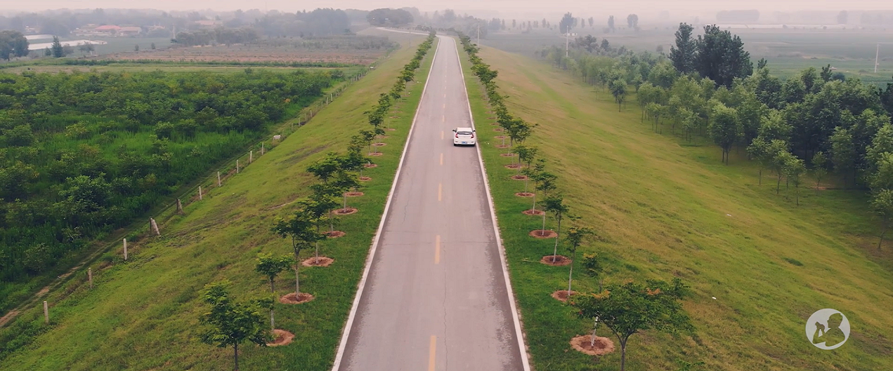
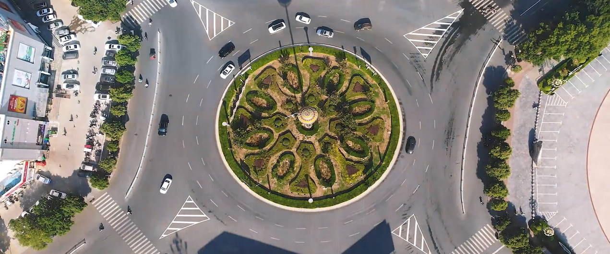
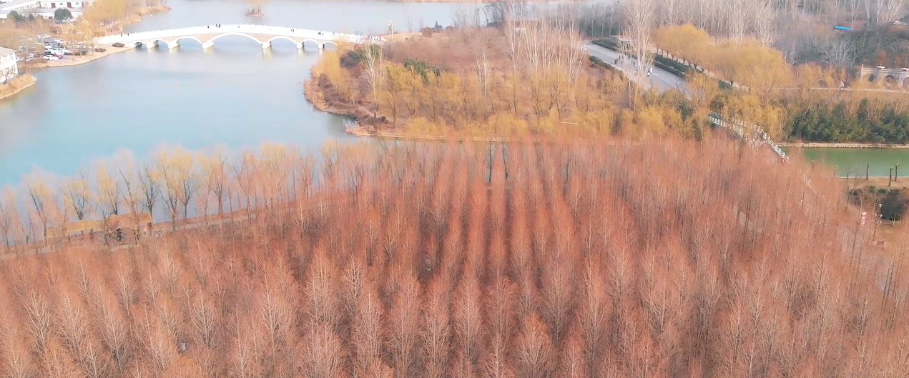

绿意濮阳
---于青山绿水处，得浮生半日闲
|

         
|
濮上园---桑间濮上，水中原乡
濮上园度假区景区生态自然，层次丰满，山湖兼胜，水天一色，是中原地区最大的人工园林，融多种旅游功能于一体，被誉为旅游休闲度假胜地。
濮上园取自“桑间濮上”之意，桑间濮上是个成语，指的就是桑间这个地方在濮水之上，桑间是古代春秋时卫国的属地。春秋时期，在现在的濮阳县西南，古濮水之畔，地有桑间濮上，土地平沃，气候温和，当时有宽大的桑园，男女聚会其间，边劳动，边对歌，相约馈赠，是男女青年相会的场所。《诗经·魏风·十亩之间》，一首情歌，就是描写采桑女子在茂密的桑林中愉快地劳动着，在收工准备回家的时候，呼唤其情侣一同回归的情景。
现在的濮上园以雷泽湖、西秀湖、东灵湖、鸭知湖四大水系为中心，以卫河、澶水、春秋河、繁水为纽带，960余亩水体与园内连绵起伏的龙首山、龙脊岭等组成巨幅山水画卷，温情旖旎，气势磅礴。水杉园、女贞园、海棠园、竹园等五百多种植物，四季长青，鸟语花香。雷泽荡舟，乘画舫、电动船畅游碧波，意趣盎然;金色的沙滩浴场、蓝天、碧水、阳光，是放松心情、休闲娱乐的绝佳去处。
文信荷园---微雨簌簌和清风，碧波深处点点红
文信荷园的命名“缘”于吕不韦。吕不韦，战国末卫国濮阳（今河南濮阳西南）人，被封为文信侯。吕不韦家乡是战国时卫国濮阳西南之处。而荷园所处濮阳县海通乡即濮阳西南，境内有5个吕邱（行政村），吕邱的源起是因为古时候这里居住的大多为姓吕和姓邱之人，时至今日在吕邱这一带还流传有吕不韦的故事。相传文信荷园附近曾是少年时期吕不韦的主要活动场所，故命名为文信荷园。
随着如织的人流移步向前，会不禁令人感叹，“江南可采莲，莲叶何田田”，这就是梦中的江南水乡吧?!茫茫荷塘，接天碧叶挨挨挤挤，荷花点缀其中，竞相开放，碧水潭泮默默地散发着香味。早出的莲蓬碧青，偶尔也能遇到碧叶深处隐匿的成熟的莲蓬。一阵风吹来一池硕大荷叶半翻卷，犹如堆云，也如波浪。俗话说:“春游芳草地，夏赏绿荷池。小荷才露尖尖角，早有蜻蜓立上头。接天莲叶无穷碧，映日荷花别样红。”这是对万亩文信荷园的写照,辽阔而绵长。